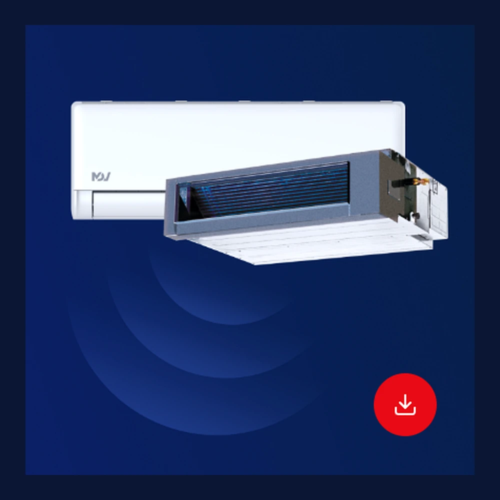
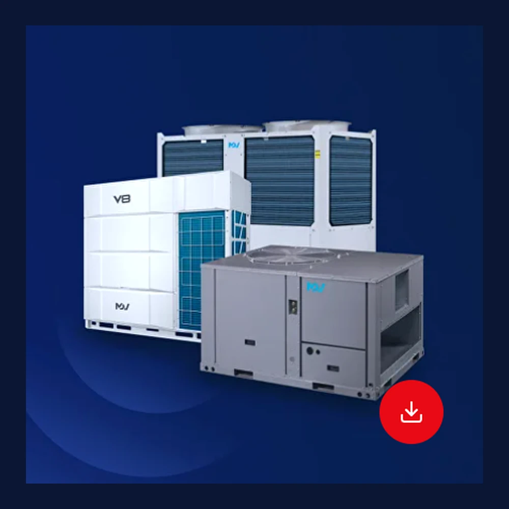
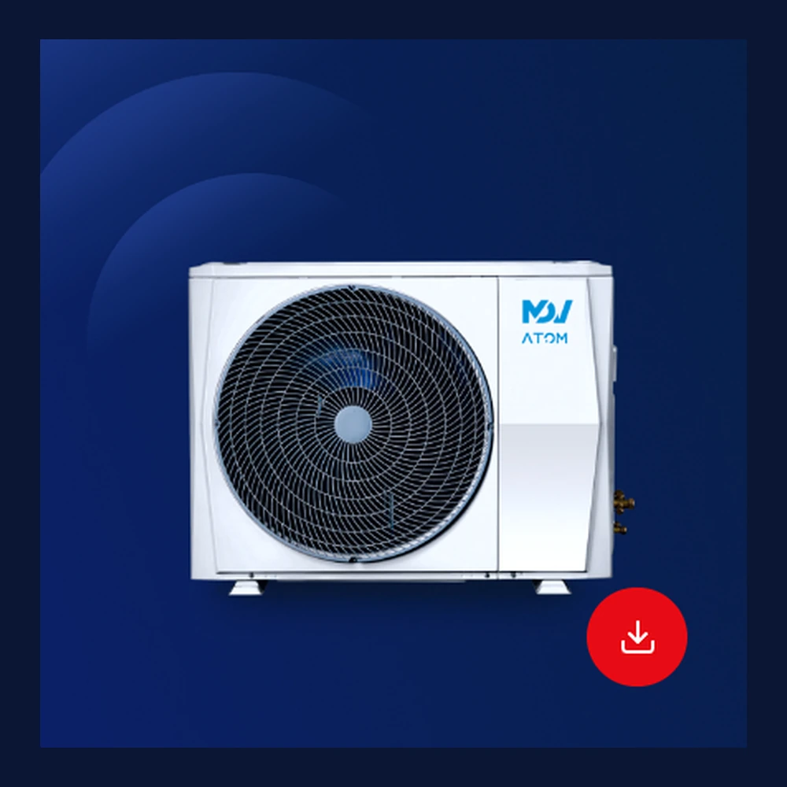
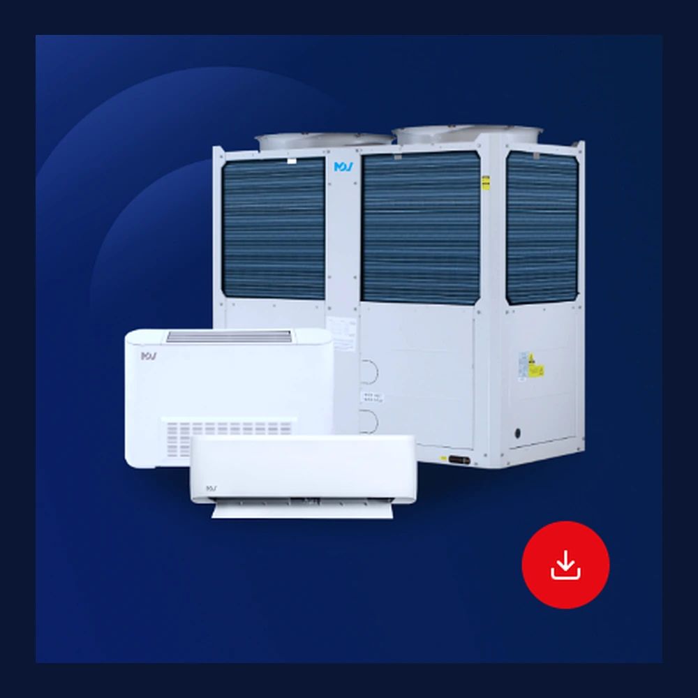

MDV · Бытовые решения
Бытовые и полупромышленные системы кондиционирования
Настенные, кассетные, канальные, консольные и другие типы внутренних блоков.
Подборки оборудования по направлениям. На сайте размещены обложки и структура каталогов; актуальные PDF и технические подборки менеджер отправит по запросу.

Настенные, кассетные, канальные, консольные и другие типы внутренних блоков.

Мультизональные и промышленные решения для крупных коммерческих объектов.

Компактные мультизональные решения для домов, больших квартир и небольших коммерческих объектов.

Оборудование для центрального холодоснабжения, отопления и подготовки горячей воды.
Напишите, какое оборудование интересует: бытовые системы, мультисплит, VRF, тепловые насосы или промышленная техника.